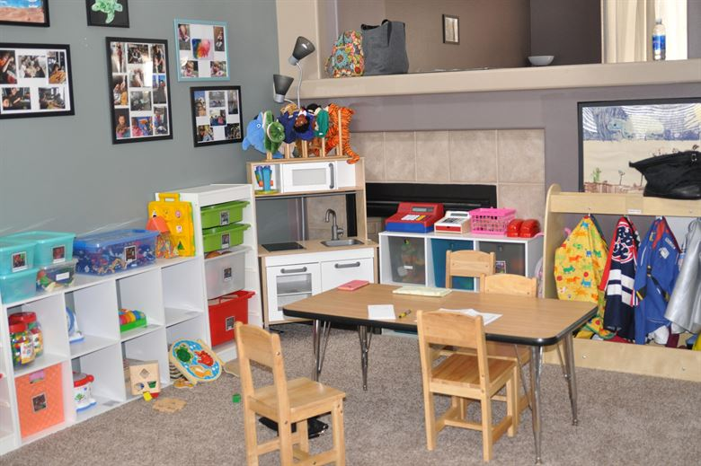
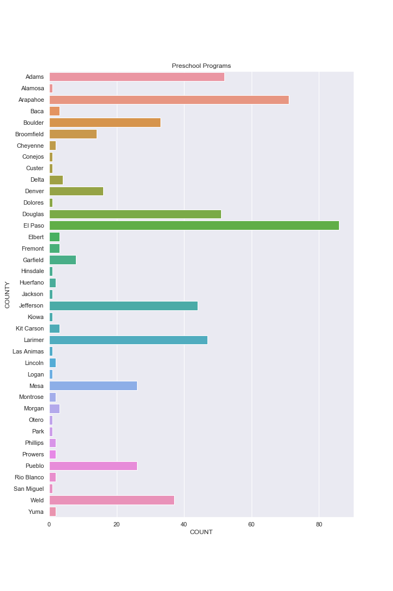
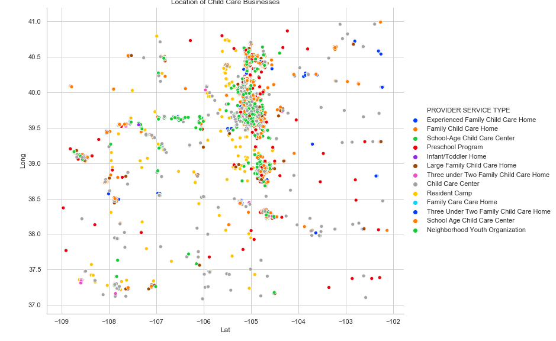

Section 2.12 Eighth Motivating Example - Colorado Child Care

# Consider the following data set of licenses for child care business in Colorado
# (from https://data.colorado.gov/)
cocc = pa.read_csv('Data Sets/Colorado_Licensed_Child_Care_Facilities_Report.csv')
cocc.head()
PROVIDER ID PROVIDER NAME \
0 48 VIKKI MCKEOGH
1 65 JACKIE GRAY
2 100 CHEROKEE TRAIL ELEMENTARY KIDS CENTER
3 115 EARLY CHILDHOOD EDUCATION
4 157 CHERLLYNN SAUNDERS
PROVIDER SERVICE TYPE STREET ADDRESS \
0 Experienced Family Child Care Home 6635 E Monaco DR
1 Family Child Care Home 4388 118 Ave.
2 School-Age Child Care Center 17302 Clarke Farms DR
3 Preschool Program 1023 N 31st ST
4 Infant/Toddler Home 5989 W Fair DR
CITY STATE ZIP COUNTY COMMUNITY \
0 Brighton CO 80602 Adams West Adams
1 Thornton CO 80233 Adams West Adams
2 Parker CO 80134 Douglas Parker
3 Colorado Springs CO 80904 El Paso Colorado Springs
4 Littleton CO 80123 Jefferson Northeast Jefferson
ECC ... CCCAP CASE COUNT_D1 \
0 Early Childhood Partnership of Adams County ... NaN
1 Early Childhood Partnership of Adams County ... 3.0
2 Douglas County Early Childhood Council ... 3.0
3 Alliance for Kids ... NaN
4 Triad Early Childhood Council ... NaN
CCCAP FA EXP DATE_D1 CCCAP TOTAL AUTH_D1 CCCAP FA STATUS_D1 \
0 NaN NaN NaN
1 06/30/2019 3.0 1.0
2 06/30/2019 5.0 1.0
3 NaN NaN NaN
4 NaN NaN NaN
CCCAP AMOUNT PAID_D1 CCCAP FA EXP DATE_D2 CCCAP TOTAL AUTH_D2 \
0 NaN NaN NaN
1 239.20 06/14/2019 3.0
2 974.61 05/31/2020 5.0
3 NaN NaN NaN
4 NaN NaN NaN
CCCAP FA STATUS_D2 LICENSE FEE DISCOUNT LONG-LAT
0 NaN 0.0 (39.919258, -104.911005)
1 1.0 0.0 (39.9101, -104.9344)
2 1.0 0.0 (39.525183, -104.786646)
3 NaN 0.0 (38.86547, -104.867475)
4 NaN 0.0 (39.604151, -105.063248)
[5 rows x 27 columns]
cocc = pa.read_csv('Data Sets/Colorado_Licensed_Child_Care_Facilities_Report.csv')
cocc = cocc.loc[:, ['COUNTY', 'CITY', 'PROVIDER SERVICE TYPE']] # Keep only the columns we want here
cocc.loc[:, 'COUNT'] = 1 # Add a variable for counting unique values
cocc = cocc.groupby(['COUNTY', 'CITY', 'PROVIDER SERVICE TYPE']).sum()
# Sum the values after grouping by County,
# City, and Provider Type
cocc.head()
COUNT
COUNTY CITY PROVIDER SERVICE TYPE
Adams Arvada Child Care Center 2
Aurora Child Care Center 10
Experienced Family Child Care Home 1
Family Child Care Home 2
Preschool Program 7
Worth pausing here and making sure we understand what we have done: We have created a new data frame whose rows are now the County, City, and Provider Type factors; and the single Column is the Count of the number of
that Provider Type in the City.
temp = cocc.reset_index().loc[:, ['COUNTY', 'PROVIDER SERVICE TYPE', 'COUNT']]
# Drop the city and go back to a full data frame.
temp = temp.groupby(['COUNTY', 'PROVIDER SERVICE TYPE']).sum()
# Redo the gather but now ignoring City
temp = temp.reset_index()
# Set it back to a full data frame.
temp = temp[temp['PROVIDER SERVICE TYPE']=='Preschool Program']
plt.figure(figsize = (10, 15))
sn.set(style='darkgrid')
sn.barplot(x='COUNT', y='COUNTY', data=temp)
plt.title('Preschool Programs');

Fine for someone from Colorado. But can we do better?
cocc = pa.read_csv('Data Sets/Colorado_Licensed_Child_Care_Facilities_Report.csv')
temp = cocc.loc[:, ['PROVIDER SERVICE TYPE', 'LONG-LAT'] ]
# pull up the longitude and lattitude coordinates
lon = [eval(temp.loc[c, 'LONG-LAT'])[0] for c in temp.index.values]
lat = [eval(temp.loc[c, 'LONG-LAT'])[1] for c in temp.index.values]
# Separate the longitude and lattide coordinates
# Some notes on the Python here: the coordinates have been read in as a string, we can convert them to a
# tuple with eval and then reference each with a position index.
locate = pa.DataFrame(np.array( [lon, lat]).transpose(), columns = ['Long', 'Lat'])
locate = pa.concat( [locate, temp], axis=1).drop('LONG-LAT', axis=1)
sn.set(style='whitegrid')
sn.hls_palette(10)
sn.relplot(x='Lat', y='Long', hue='PROVIDER SERVICE TYPE',
data=locate, height=8, aspect=1.2, palette='bright');
plt.title('Location of Child Care Businesses');

A couple of notes of things we should learn how to do in the future:
It would be nice to put these points on a map of Colorado; or to put points for the larger cities in the state.
It would also be nice to change it to combine near by points and make a bigger point.